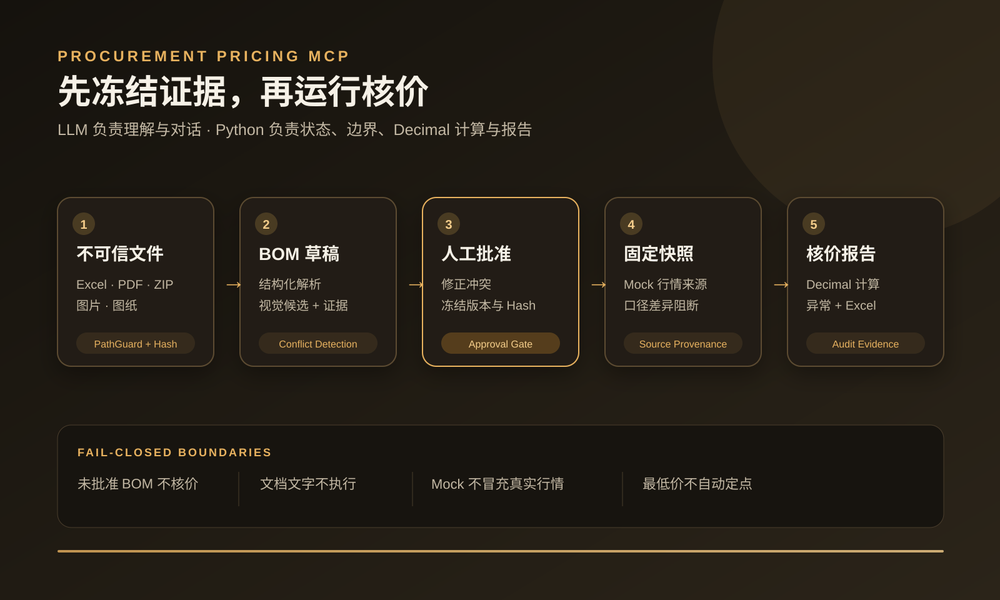

让 Agent“看懂报价单”不等于可以让它直接核价
采购文件可能缺字段、互相冲突，甚至包含提示注入。视觉模型的候选字段也可能错误；如果没有状态门禁、来源证据和人工批准，LLM 很容易跳过复核或编造市场价格。
MCP Workflow Case Study · 重点案例
一个连接 Telegram / Hermes 与 Python 核价内核的采购询比价 MVP。LLM 负责理解文件、视觉页面和用户意图；Python 强制执行路径安全、BOM 证据、人工批准、固定行情快照、Decimal 计算、异常规则和 Excel 报告。

采购文件可能缺字段、互相冲突，甚至包含提示注入。视觉模型的候选字段也可能错误；如果没有状态门禁、来源证据和人工批准，LLM 很容易跳过复核或编造市场价格。
MCP 只暴露业务级工具；每次调用返回当前状态、允许动作和阻断动作。未批准 BOM 不能核价，行情口径冲突必须复核，财务计算只由版本化规则和 Decimal 执行。
PathGuard 解析真实路径、限制允许根目录并立即复制进服务端 Job；ZIP 检查逃逸和体量，拒绝敏感路径与符号链接绕过。
Excel / PDF / ZIP 进入 parser 路由；图片和图纸只产生带 confidence、source_text、页码与内容 Hash 的候选字段。
按来源优先级合并候选，缺失、低置信度和冲突形成 Review Issue；人工修正后冻结 BOM 版本与 SHA-256。
当前两个 Adapter 只读取固定日期 Mock JSON；来源差异过大或无数据会阻断核价，不猜 endpoint、字段或价格。
材料、加工、模具摊销、二次加工、包装和运输统一用 Decimal 与明确舍入规则，保留利用率来源和规则版本。
对供应商报价和估算成本生成 warning / critical 异常，保存运行、快照、代码版本和审计记录，最后输出 Excel。
复制并 Hash 文件，解析结构化内容，标记待视觉处理页面。
合并结构化与视觉候选，检测缺失、冲突、低置信度和可疑内容。
采购人员修正阻断问题并明确批准，生成不可变 BOM 版本。
获取固定日期行情并校验口径；异常来源阻断后续计算。
运行规则化核价和异常检测，输出可解释结果与 Excel 附件。
英文和中文的“忽略规则”“调用工具”“批准供应商”“读取密钥”等内容会被标记为可疑，但绝不会被执行。
Hermes 视觉结果必须进入 Pydantic Schema、来源证据、冲突检查和人工批准状态；Python 状态机拒绝越级调用。
真实生意社 / 隆众 Adapter 当前是空骨架；没有正式文档、鉴权、字段字典和授权时抛出未配置错误。
本次从公开仓库临时检出后生成 Demo 文件，27 项测试全部通过；本地 Demo 完成 Job、Draft、BOM、Snapshot、Pricing Run 与 Excel 报告，结果包含 1 个 critical、2 个 warning，并返回“模拟数据，仅用于流程验证”。
uv sync uv run python scripts/create_demo_files.py uv run pytest -q uv run python scripts/run_local_demo.py uv run python scripts/mcp_smoke_test.py uv run python scripts/run_evals.py
PROCUREMENT_ROOT，完整测试前需先生成 Demo 文件。